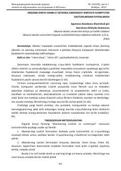

OKKimyo darslarida zamonaviy kompyuter dasturlaridan foydalanish samaradorligi haqida ilmiy maqola.
Mazkur maqolada maktablarda organik kimyo fanini o'qitishda zamonaviy kompyuter dasturlaridan foydalanish samaradorligi tahlil qilingan. ChemDraw va Chem 3D kabi dasturlar yordamida alkanlar va ularning izomeriyasini tushuntirish usullari ko'rib chiqilgan. Tadqiqot natijalari noan'anaviy ta'lim usullari o'quvchilarning bilimni o'zlashtirish ko'rsatkichini sezilarli darajada oshirishini ko'rsatadi.